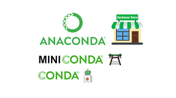

Made with ❤️ and GitHub Copilot

Overview
Conda is a popular package and environment management system widely used in the scientific computing community. In this article, we’ll explore the key features of Conda and understand why it’s a preferred choice for managing dependencies for scientific computing. In particular, why not to use system installed Python, OS R, pip, pyenv when collaboration and reproducibility are a priority?
1 Key Concepts
1.1 What Sets Conda Apart?
Conda fundamentally differs from traditional package managers by focusing on environment management rather than just package installation. Unlike pip or system package managers, Conda handles:
- Complete environment isolation
- Cross-language dependency management
- Binary package distribution
- OS-level dependency resolution
1.2 Environment Management
Conda environments provide isolated spaces where you can:
- Specify exact versions of multiple programming languages
- Manage conflicting dependencies between projects
- Share reproducible environments across different operating systems
This is particularly valuable when working with data science tools that might require specific versions of Python, R, and their associated libraries.
2 Why Not Alternative Approaches?
2.1 Node, Ruby, or Java don’t need Conda?
Languages like Node.js, Ruby, and Java have built-in package managers that handle dependencies effectively. Since they don’t need ultra high performance low level dependencies, they can rely on their language-specific package managers.
They just don’t need to go down to the level of C, C++, Fortran, and OS, Platform and Chip specific dependencies which is where Conda shines.
2.2 System Python/R/Language Limitations
System-installed Python or R (or any other language) can lead to several issues:
- Version conflicts between different projects
- Lack of reproducibility across systems
- Potential system stability issues
- Limited control over package versions
2.3 Pip’s Shortcomings
While pip is excellent for Python-specific packages, it falls short for scientific computing because it:
- Cannot manage non-Python dependencies
- Doesn’t handle system-level libraries
- Lacks environment management capabilities
- Can’t easily switch between Python versions
3 Conda’s Advantage for Scientific Computing
3.1 Package Distribution Model
Conda uses a sophisticated approach to package management:
- Pre-built binary packages
- Multiple repository channels:
- conda-forge (community-maintained)
- bioconda (bioinformatics)
- Domain-specific channels (PyTorch, NVIDIA, Intel)
3.2 Dependency Resolution
Conda employs a SAT solver to:
- Ensure all dependencies are compatible
- Resolve version conflicts automatically
- Handle cross-language dependencies
- Maintain environment consistency
4 Best Practices
4.1 Channel Priority
- Use conda-forge as the primary channel
- Avoid conda defaults due to potential licensing issues
- Add specialized channels only when needed
4.2 Environment Management
# Create a new environment
conda create -n myenv python=3.9
# Install packages
conda install -c conda-forge numpy pandas scipy
# Export environment
conda env export > environment.yml4.3 Common Pitfalls to Avoid
- Don’t mix pip and conda installations when possible
- Use $HOME instead of ~ in conda commands
- Be patient with dependency resolution
- Consider mamba for faster installations
5 Conclusion
While Conda isn’t perfect, it provides the most comprehensive solution for scientific computing environment management. Its ability to handle complex dependencies, ensure reproducibility, and support multiple programming languages makes it invaluable for collaborative scientific work.
The initial learning curve and occasional slower installations are small prices to pay for the reliability and reproducibility it offers. For scientific computing projects where reproducibility is crucial, Conda remains the tool of choice.